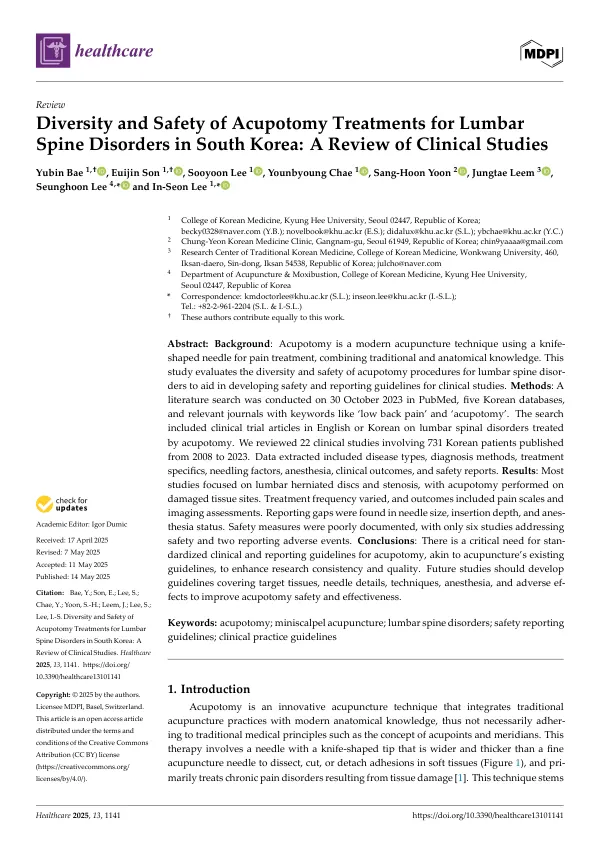

Diversity and Safety of Acupotomy Treatments for Lumbar Spine Disorders in South Korea: A Review of Clinical Studies
Bae Y, Son E, Lee S, Chae Y, Yoon SH, Leem J, Lee S, Lee IS
Healthcare 13(10):1141

첫 장 · 오픈액세스First page · open access
논문 소개Summary
요추 질환에 쓰인 도침 시술이 얼마나 제각각이고 안전은 얼마나 보고되는지 살핀 문헌고찰입니다. 2023년 10월 30일 PubMed와 국내 데이터베이스 다섯 곳, 관련 학술지를 검색해 2008년부터 2023년까지 발표된 임상연구 22편, 환자 731명을 검토했습니다. 대상은 대부분 요추 추간판탈출증과 척추관협착증이었고 시술은 손상된 조직 부위에 이루어졌습니다. 바늘 굵기와 삽입 깊이, 마취 여부가 빠진 글이 많았고 안전 관련 기술이 있는 것은 6편, 이상반응을 실제로 보고한 것은 2편뿐이었습니다. 저자들은 침 치료에 이미 있는 것과 같은 표준 보고 지침이 도침에도 필요하다고 결론지었습니다.
A review of how varied acupotomy procedures for lumbar spine disorders are, and how much of their safety is actually reported. Searching PubMed, five Korean databases and relevant journals on 30 October 2023 yielded 22 clinical studies published between 2008 and 2023, covering 731 Korean patients. Most concerned lumbar disc herniation and spinal stenosis, with the procedure performed at damaged tissue sites. Needle size, insertion depth and anaesthesia status were frequently missing; only six studies addressed safety and only two reported adverse events. The authors conclude that acupotomy needs standardised clinical and reporting guidelines of the kind acupuncture already has.
인용Cite
Bae Y, Son E, Lee S, Chae Y, Yoon SH, Leem J, Lee S, Lee IS. Diversity and Safety of Acupotomy Treatments for Lumbar Spine Disorders in South Korea: A Review of Clinical Studies. Healthcare. 2025;13(10):1141. doi:10.3390/healthcare13101141